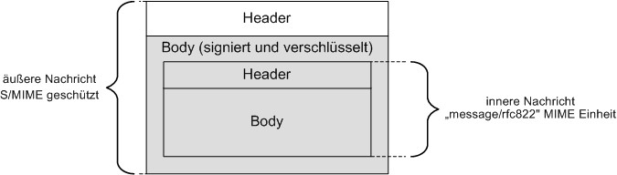

Elektronische Gesundheitskarte und Telematikinfrastruktur
S/MIME-Profil Kommunikation Leistungserbringer
(KOM-LE)
| Version | 1.7.0 |
| Revision | 571447 |
| Stand | 04.08.2021 |
| Status | freigegeben |
| Klassifizierung | öffentlich |
| Referenzierung | gemSMIME_KOMLE |
| Seit März 2020 verwendet die gematik die Bezeichnung „KIM – Kommunikation im Medizinwesen“ für die Anwendung KOM-LE. Diese neue Benennung findet sich insbesondere in Informationsmaterialien für die Zielgruppe Leistungserbringer sowie in Presseveröffentlichungen. Eine Umbenennung in den technisch-normativen Dokumenten wie Spezifikationen, Konzepten, Zulassungsdokumenten etc. mit Ausnahme von Angaben zu Domänen, E-Mail-Adressen, technischen Schnittstellen, Parametern u.ä. ist mit Stand Release 4.0.0 nicht geplant. |
Änderungen zur Vorversion
Anpassungen des vorliegenden Dokumentes im Vergleich zur Vorversion können Sie der nachfolgenden Tabelle entnehmen.
Dokumentenhistorie
| Version | Stand | Kap./ Seite | Grund der Änderung, besondere Hinweise | Bearbeitung |
|---|---|---|---|---|
| 0.1 | 05.09.11 |
Alle | Ersterstellung | Projekt KOM-LE |
| 1.0.0 | 24.07.15 |
freigegeben | gematik | |
| 1.1.0 | 28.10.16 |
2.1, 2.2 | Anpassungen gemäß Änderungsliste | gematik |
| 1.2.0 | 28.06.19 | Einarbeitung gemäß Änderungsliste P19.1 | gematik | |
| 1.2.1 | 02.03.20 | Einarbeitung gemäß Änderungsliste P1.1 | gematik | |
| 1.3.0 | 30.06.20 | Anpassungen gemäß Änderungsliste P22.1 und Scope-Themen aus Systemdesign R4.0.0 | gematik | |
| 1.4.0 | 12.11.20 | Einarbeitung gemäß Änderungsliste P22.2 | gematik | |
| 1.4.1 | 08.01.21 | Einarbeitung gemäß Änderungsliste P22.6 | gematik | |
| 1.5.0 | 19.02.21 | Einarbeitung gemäß Änderungsliste P22.5 | gematik | |
| 1.6.0 | 06.04.21 | Einarbeitung gemäß KIM Maintenance 21.1/KIM 1.5.1 | gematik | |
| 1.7.0 | 04.08.21 | Einarbeitung gemäß KIM Maintenance 21.2 /KIM 1.5.1-3 | gematik |
Dieses Dokument definiert ein Profil für S/MIME (Secure/Multipurpose Internet Mail Extentions). Dieses Profil konkretisiert die S/MIME-Spezifikation für das Projekt „Kommunikation Leistungserbringer“ (KOM-LE). Ziel dieses Profils ist die Gewährleistung der Interoperabilität sowie der Schutz von Vertraulichkeit und Integrität der KOM-LE-Nachrichten.
Das Profil basiert auf der Spezifikation von S/MIME Version 3.2. Nicht alle marktüblichen E-Mail-Clients unterstützen alle S/MIME-Leistungsmerkmale, die in diesem Profil verwendet werden (z.B. die Unterstützung von Zertifikaten ohne E-Mail-Adresse – in S/MIME Version 3 eingeführt, Schutz von Header-Elementen – in S/MIME Version 3.2 eingeführt). Die Kompatibilität mit marktüblichen E-Mail-Clients ist deshalb nicht Ziel dieses Profils.
Dieses Dokument richtet sich, neben Personengruppen die grundsätzlich an den Verfahren von KOM-LE interessiert sind, an
Das vorliegende Dokument enthält Festlegungen, die von Herstellern und Betreibern von Komponenten und Diensten der Telematikinfrastruktur im Rahmen der Projekte der Neuausrichtung zur Einführung der elektronischen Gesundheitskarte und der Telematikinfrastruktur zu beachten sind. Es gilt somit nicht für den Basis-Rollout.
Folgende Dokumente sind für dieses Profil normativ:
Folgende Dokumente sind für dieses Profil informativ:
Dieses Dokument spezifiziert das Format einer integritäts- und vertraulichkeitsgeschützten KOM-LE-Nachricht. Das Dokument macht keine Vorgaben für Komponenten und Fachdienste, die an Erzeugung, Bearbeitung und Transport von KOM-LE-Nachrichten beteiligt sind.
Anforderungen als Ausdruck normativer Festlegungen werden durch eine eindeutige ID sowie die dem RFC 2119 [RFC2119] entsprechenden, in Großbuchstaben geschriebenen deutschen Schlüsselworte MUSS, DARF NICHT, SOLL, SOLL NICHT, KANN gekennzeichnet.
Sie werden im Dokument wie folgt dargestellt:
<AFO-ID> - <Titel der Afo>
Text / Beschreibung
[<=]
Dabei umfasst die Anforderung sämtliche innerhalb der Textmarken angeführten Inhalte.
Die Darstellung der Spezifikationen von Komponenten erfolgt auf der Grundlage einer durchgängigen Use-Case-Modellierung als
Sofern im Text dieser Spezifikation auf die Ausgangsanforderungen verwiesen wird, erfolgt dies in eckigen Klammern, z.B. [KOMLE-A_2015]. Wird auf Eingangsanforderungen verwiesen, erfolgt dies in runden Klammern, z.B. (KOMLE-A_202).
Dieses Kapitel beschreibt das Format einer integritäts- und vertraulichkeitsgeschützten KOM-LE-Nachricht.
Diesem Profil konforme Nachrichten MÜSSEN alle Mussbestimmungen von IETF RFCs 5652 [RFC5652], 5083 [RFC5083], 5750 [RFC5750] und 5751 [RFC5751] umsetzen.
Um die Interoperabilität zwischen KOM-LE-Clients sicherzustellen und den Integritäts- und Vertraulichkeitsschutz für KOM-LE-Nachrichten zu gewährleisten, wird hier eine für alle KOM-LE-Nachrichten geltende Struktur definiert.
Abbildung 1 bietet eine informative Darstellung der Struktur einer KOM-LE-Nachricht.

Abbildung 1: Abb_Struk_KOMLE_Msg Struktur einer KOM-LE-Nachricht (informativ)
Eine KOM-LE-Nachricht besteht aus zwei Schichten. Die äußere Schicht ist eine entsprechend S/MIME-Standard signierte und verschlüsselte E-Mail-Nachricht. Weiter unten im Text wird diese Nachricht als äußere Nachricht bezeichnet. Die innere Schicht ist eine zu schützende E-Mail-Nachricht, die die Nutzdaten enthält und als message/rfc822 MIME Einheit in die äußere Nachricht verpackt ist.
Eine diesem KOM-LE-Profil konforme Nachricht hat folgende Struktur:
KOM-LE-A_2095
Eine KOM-LE-Nachricht MUSS zuerst digital signiert und danach verschlüsselt werden.
<=KOM-LE-A_2096
Das digitale Signieren und die Verschlüsselung MÜSSEN entsprechend der S/MIME Version 3.2 erfolgen.
<=KOM-LE-A_2097
Der verschlüsselte Body der Nachricht MUSS eine message/rfc822 MIME Einheit sein, die die zu schützende Nachricht mit Nutzdaten enthält.
<=KOM-LE-A_2098-03
Der Header der äußeren Nachricht MUSS mit den orig-date, from, sender, reply-to, to, cc, bcc der inneren Nachricht identisch sein. Ein Headerelement der inneren Nachricht beginnend mit dem Bezeichner X-KIM- MUSS in den äußeren Header übernommen werden.
<=
KOM-LE-A_2099
Der Header der äußeren Nachricht MUSS ein Header-Element X-KOM-LE-Version enthalten.
<=KOM-LE-A_2100-02
Der Wert des X-KOM-LE-Version Elements MUSS auf die KOM-LE Version gesetzt werden, die für das Clientmodul zur Verarbeitung auf der Empfängerseite notwendig ist.
<=
Wenn für eine E-Mail-Nachricht keine Anhänge auf dem KAS abgelegt werden, handelt es sich bei der E-Mail um eine Nachricht in der KIM-Version 1.0. Werden Anhänge aus der E-Mail-Nachricht auf dem KAS abgelegt, wird das Element X-KOM-LE-Version mit der KIM-Version 1.5 in der E-Mail-Nachricht befüllt.
KOM-LE-A_2101-01
Das Element Message-ID der äußeren Nachricht muss mit dem Inhalt des Elementes Message-ID der inneren Nachricht gefüllt werden. <=
KOM-LE-A_2102
Das subject Header-Element der äußeren Nachricht MUSS „KOM-LE-Nachricht“ als Wert haben.
<=KOM-LE-A_2103
Die digitale Signatur MUSS application/pkcs7-mime S/MIME Media-Typ mit signed-data Parameter verwenden (Opak-Signatur).
<=KOM-LE-A_2104
Die Verschlüsselung MUSS application/pkcs7-mime S/MIME Media-Typ mit authenticated-enveloped-data Parameter verwenden.
<=S/MIME ist ein Set von Spezifikationen für die Absicherung der E-Mail-Kommunikation. Unter anderem spezifiziert S/MIME die Verschlüsselung und das digitale Signieren von MIME-Einheiten, die als Teil einer E-Mail-Nachricht transportiert werden können.
Die Verschlüsselung und das Signieren betreffen nur den Body einer Nachricht. Der Header der Nachricht bleibt ungeschützt. Das resultiert aus der Notwendigkeit den Mailübertragungssystemen (Message Transfer Agents – MTAs) die Möglichkeit zu geben die im Header enthaltenen Adressierungsinformationen zu lesen sowie den Header mit neuen Einträgen zu ergänzen.
Das KOM-LE-S/MIME-Profil sorgt dafür, dass die Integrität und Vertraulichkeit von Body und Header-Elementen einer Nachricht geschützt werden.
Um das zu erreichen, verwendet dieses Profil ein im S/MIME Version 3.2 eingeführtes Verfahren, bei dem die ganze Nachricht (der Header und der Body) in einer message/rfc822 MIME-Einheit gekapselt, verschlüsselt und/oder signiert sowie als Anhang in einer neuen Nachricht verpackt wird.
Der Header der äußeren Nachricht übernimmt die orig-date, from, sender, reply-to, to, cc, bcc Header-Elemente der originalen (inneren) Nachricht. Der Betreff der äußeren Nachricht soll keine schutzbedürftigen Daten enthalten.
S/MIME ermöglicht das Verschlüsseln und Signieren in beliebiger Reihenfolge. Das KOM-LE-Profil fordert, dass die Daten zuerst signiert und danach verschlüsselt werden. Diese Reihenfolge stellt eine direkte Verbindung zwischen dem Inhalt der Nachricht und der Signatur her und sorgt dafür, dass die Information über den Unterzeichner durch die Verschlüsselung unsichtbar gemacht wird.
S/MIME definiert zwei Möglichkeiten für das Anbringen einer Signatur:
Die Klartext-Signatur ermöglicht es E-Mail-Clients ohne S/MIME-Unterstützung die signierten Inhalte darzustellen (ohne die Signatur zu prüfen). Der Nachteil ist, dass MTAs oder Virenscanner die Inhalte ändern können und dadurch die Signatur ungültig machen. Die Opak-signierten Daten werden in E-Mail-Clients ohne S/MIME-Unterstützung nicht angezeigt. Der Transport innerhalb eines CMS-Objektes bietet aber den Vorteil, dass solche Objekte nicht durch Virenscanner oder MTAs geändert werden. Aus diesem Grund wird in diesem Profil die Verwendung der Opak-Signatur vorgeschrieben.
Die S/MIME-Spezifikation empfiehlt die Verwendung der Klartext-Signatur. Der Widerspruch entsteht dadurch, dass die Lesbarkeit einer Nachricht für die S/MIME-Spezifikation Priorität über die Möglichkeit die Signatur zu prüfen hat, was aber nicht Ziel des KOM-LE-S/MIME-Profils ist.
Beispiel einer diesem Profil konformen Nachricht:
X-KOM-LE-Version: 1.0
MIME-Version: 1.0
Message-Id: (message ID)
From: (mailbox in US-ASCII)
To: (address in US-ASCII)
Date: Wed, 16 Nov 2011 11:27:58 +0100
Subject: KOM-LE Nachricht
Content-Type: application/pkcs7-mime;
smime-type=authenticated-enveloped-data;
name=smime.p7m
Content-Transfer-Encoding: base64
Content-Disposition: attachment; filename=smime.p7m
rfvbnj756tbBghyHhHUujhJhjH77n8HHGT9HG4VQpfyF467GhIGfHfYT6
7n8HHGghyHhHUujhJh4VQpfyF467GhIGfHfYGTrfvbnjT6jH7756tbB9H
f8HHGTrfvhJhjH776tbB9HG4VQbnj7567GhIGfHfYT6ghyHhHUujpfyF4
0GhIGfHfQbnj756YT64V...
Das obere Beispiel stellt eine äußere KOM-LE-Nachricht dar, deren verschlüsselter Body eine opak-signierte application/pkcs7-mime MIME-Einheit enthält:
Content-Type: application/pkcs7-mime;
smime-type=signed-data;
name=smime.p7m
Content-Transfer-Encoding: binary
Content-Disposition: attachment; filename=smime.p7m
567GhIGfHfYT6ghyHhHUujpfyF4f8HHGTrfvhJhjH776tbB9HG4VQbnj7
77n8HHGT9HG4VQpfyF467GhIGfHfYT6rfvbnj756tbBghyHhHUujhJhjH
HUujhJh4VQpfyF467GhIGfHfYGTrfvbnjT6jH7756tbB9H7n8HHGghyHh
6YT64V0GhIGfHfQbnj75...
Der signierte Inhalt ist eine message/rfc822 MIME-Einheit, die die innere Nachricht enthält:
Content-Type: message/rfc822
MIME-Version: 1.0
From: (mailbox in US-ASCII)
To: (address in US-ASCII)
Date: Wed, 16 Nov 2011 11:27:58 +0100
Subject: Arztbrief: Herr Leo Mustermann
...
--unique-boundary-1
Der S/MIME-Spezifikation entsprechend wird für verschlüsselte Daten (CMS) der Inhaltstyp authenticated-enveloped-data verwendet. Die mit dem KOM-LE-S/MIME-Profil konforme Verschlüsselung muss die unten beschriebenen Anforderungen an die CMS beachten.
Dieses Profil unterstützt als Schlüssel-Verwaltungalgorithmus nur „key-transport“ (siehe 2.2.3). Bei diesem Verfahren werden Inhaltsdaten mit einem symmetrischen Inhaltsschlüssel verschlüsselt und der Inhaltsschlüssel wird noch mal je Empfänger asymmetrisch verschlüsselt. Dieses Verfahren ist als hybride Verschlüsselung bekannt. Die für die hybride Verschlüsselung zulässigen Algorithmen werden in [gemSpec_Krypt] vorgegeben und vom Konnektor bei der Verschlüsselung berücksichtigt.
Für ein CMS-Objekt mit dem Inhaltstyp authenticated-enveloped-data gelten folgende Einschränkungen:
KOM-LE-A_2106
Das Element authenticatedEnvelopedData DARF NICHT originatorInfo enthalten.
<=KOM-LE-A_2107
Das Element authenticatedEnvelopedData MUSS unauthAttrs enthalten.
<=Ein CMS-Objekt mit dem Inhaltstyp authenticated-enveloped-data kann folgende Elemente enthalten:
Das KOM-LE-S/MIME-Profil benutzt nur die Elemente, die für den Transport und die Entschlüsselung von Inhaltsdaten erforderlich sind. So werden Zertifikate des Senders, die z.B. für die Verschlüsselung der Antwort benötigt werden über einen Verzeichnisdienst oder andere Wege zugänglich gemacht. Die Nachricht muss ungeschützte Attribute enthalten.
Für die Empfängerinformationen (recipientInfos) gelten folgende Festlegungen:
KOM-LE-A_2108
Die Empfängerinformation (recipientInfos) MUSS für alle Empfänger “key transport” als Schlüsselverwaltungsalgorithmus verwenden (keyTransRecipientInfo Typ).
<=KOM-LE-A_2109
Das Element keyTransRecipientInfo MUSS den Aussteller und die Seriennummer verwenden, um das Zertifikat des Empfängers zu identifizieren (issuerAndSerialNumber Typ).
<=KOM-LE-A_2111-01
Die Empfängerinformation (recipientInfos) MUSS zusätzlich zu den recipientInfo Elementen für alle Empfänger auch ein recipientInfo Element für den Sender enthalten. <=
RecipientInfos besteht aus einem oder mehreren recipientInfo Elementen. Es gibt ein Element pro Empfänger und jedes Element enthält Informationen, die ein entsprechender Empfänger zur Entschlüsselung des symmetrischen Nachrichtenschlüssels braucht.
Informationen, die ein recipientInfo Element enthält, sind von der jeweiligen Schlüsselverwaltungsmethode abhängig.
Um auch dem Sender die Möglichkeit zu geben die Nachricht später zu öffnen, erfordert das KOM-LE-S/MIME-Profil auch ein recipientInfo Element für den Sender. Das Element kann entfallen, wenn das Verschlüsselungszertifikat des Senders nicht verfügbar ist.
Für verschlüsselte Inhaltsinformationen (authEncryptedContentInfo) gelten folgende Festlegungen:
KOM-LE-A_2112
Die verschlüsselte Inhaltsinformation (authEncryptedContentInfo) MUSS encryptedContent enthalten.
<=Die mit diesem Profil konformen symmetrischen Verschlüsslungsalgorithmen werden in [gemSpec_Krypt] vorgegeben und vom Konnektor bei der Verschlüsselung berücksichtigt. Die verschlüsselten Daten werden innerhalb des CMS-Objektes mittransportiert.
KOM-LE-A_2114-01
Eine dem KOM-LE-S/MIME-Profil konforme Nachricht MUSS ein recipient-emails Attribut als ein ungeschütztes Attribut enthalten. Im Attribut werden die Zusammenhänge zwischen den für die Verschlüsselung verwendeten Zertifikaten und den E-Mail-Adressen der Empfänger gespeichert.
Der folgende Objekt-Identifikator identifiziert das recipient-emails Attribut:
id-recipientEmails OBJECT IDENTIFIER ::= {1.2.276.0.76.4.173}
Recipient-emails Attributwerte sind vom ASN.1 Typ RecipientEmails:
RecipientEmails ::= SET SIZE (1..MAX) OF RecipientEmail
RecipientEmail ::= SEQUENCE {
emailAddress IA5String, rid RecipientIdentifier }
<=
KOM-LE-A_2115-02
Für jedes Element vom Typ RecipientInfo MUSS es ein Element vom Typ RecipientEmail geben und die jeweiligen rid Elemente MÜSSEN auf dasselbe Zertifikat referenzieren. Die Übernahme der durch das Zertifikat bereitgestellten Parameter zum Issuer (DistinguishedName) in die ASN1-Struktur der Nachricht erfolgt in der RDNSequence absteigend, beginnend mit dem obersten RelativeDistinguishedName.
<=
KOM-LE-A_2116
Das emailAddress Element MUSS die E-Mail-Adresse des Zertifikatsinhabers des im rid referenzierten Zertifikats enthalten.
<=KOM-LE-A_2117
Der ASN.1 Typ RecipientIdentifier entspricht dem gleichnamigen Typ aus der CMS-Spezifikation [RFC5652]. Um das Zertifikat des Empfängers zu identifizieren MUSS der Aussteller und die Seriennummer (IssuerAndSerialNumber Typ) verwendet werden.
<=Das KOM-LE-S/MIME-Profil unterstützt nur bestimmte Zertifikatsprofile (siehe Kapitel 3). Laut diesen Profilen enthalten die Verschlüsselungszertifikate nicht die E-Mail-Adresse des Zertifikatsinhabers. Um während der Entschlüsselung sicher zu stellen, dass die Nachricht mit dem Schlüssel des Abholers oder des Senders entschlüsselt wird, werden Zusammenhänge zwischen den für die Verschlüsselung verwendeten Zertifikaten und den E-Mail-Adressen der Empfänger und des Senders als unverschlüsselte Attribute im authenticated-enveloped-data CMS-Objekt abgelegt.
UnauthAttrs ist ein optionales Element, das mehrere unverschlüsselte Attribute enthalten kann. Das KOM-LE-S/MIME-Profil definiert das recipient-emails Attribut als ein Set von mehreren Elementen des Typs RecipientEmail. Pro Element des Typs RecipientInfo gibt es ein Element des Typs RecipientEmail. Dadurch wird jedes Verschlüsselungszertifikat mit einer E-Mail-Adresse assoziiert.
Um den Zusammenhang zwischen der E-Mail-Adresse und den Zertifikaten vor der Entschlüsselung herstellen zu können, müssen die Inhalte des recipient-emails Attributs unverschlüsselt transportiert werden. Infolgedessen wird die Integrität des Attributs nicht durch die S/MIME-Signatur geschützt.
Um sicherzustellen, dass auf dem Weg zum Empfänger das recipient-emails Attribut nicht geändert wurde, muss das verschlüsselte signed-data CMS-Objekt die Kopie des Attributes als signiertes Attribut enthalten. Nach dem Entschlüsseln der Nachricht und Prüfung der Signatur können die Werte der beiden Attribute miteinander verglichen werden. Dadurch wird geprüft, ob das recipient-emails Attribut manipuliert wurde (siehe 2.3.5).
Das folgende Beispiel stellt ein Fragment des authenticated-enveloped-data CMS-Objektes, das eine entschlüsselte, an zwei Empfänger gerichtete innere Nachricht enthält, dar:
ContentInfo
├contentType: 1.2.840.113549.1.9.16.1.23 (id-ct-authEnvelopedData)
└AuthEnvelopedData
├version: 0
├recipientInfos
│ ├RecipientInfo
│ │ └ktri
│ │ ├version: 0
│ │ ├rid
│ │ │ └issuerAndSerialNumber
│ │ │ ├issuer
│ │ │ │ ├…
│ │ │ └SerialNumber: 123456789
│ │ ├keyEncryptionAlgorithm
│ │ │ └…
│ │ └encryptedKey: …
│ └RecipientInfo
│ └ktri
│ ├version: 0
│ ├rid
│ │ └issuerAndSerialNumber
│ │ ├issuer
│ │ │ ├…
│ │ └SerialNumber: 987654321
│ ├keyEncryptionAlgorithm
│ │ └…
│ └encryptedKey: …
├authEncryptedContentInfo
│ ├contentType: 1.2.840.113549.1.7.1 (id-data)
│ ├contentEncryptionAlgorithm:
│ │ ├ algorithm: 2.16.840.1.101.3.4.1.46 (id-aes256-gcm)
│ │ └ parameters:
│ │ ├ aes-nonce: …
│ │ └ aes-ICVlen: …
│ └encryptedContent: …
│
├mac: …
│
└unauthAttrs
└Attribute (id-recipientEmails)
├attrType: komle-recipient-emails
└attrValues
└RecipientEmails
├RecipientEmail
│ ├emailAddress: mustermann@komle.de
│ └rid
│ └issuerAndSerialNumber
│ ├issuer
│ │ ├…
│ └SerialNumber: 123456789
│
└RecipientEmail
├emailAddress: musterfrau@komle.de
└rid
└issuerAndSerialNumber
├issuer
│ ├…
└SerialNumber: 987654321
Der S/MIME-Spezifikation entsprechend, wird für digital signierte Daten CMS mit dem Inhaltstyp signed-data verwendet. Die mit dem KOM-LE-S/MIME-Profil konforme Signatur muss die unten beschriebenen Anforderungen an CMS beachten.
Für ein CMS-Objekt mit dem Inhaltstyp signed-data gelten folgende Festlegungen:
KOM-LE-A_2118
Ein CMS-Objekt mit dem Inhaltstyp signed-data DARF NICHT crls enthalten.
<=KOM-LE-A_2119
Ein CMS-Objekt mit dem Inhaltstyp signed-data MUSS certificates enthalten.
<=Ein CMS-Objekt mit dem Inhaltstyp signed-data kann bis zu sechs Elemente enthalten:
Bei der Signaturerzeugung wird ein Digest (ein Hash-Wert) der zu signierenden Daten berechnet und mit dem privaten Schlüssel des Unterzeichners asymmetrisch verschlüsselt. Die entsprechenden kryptographischen Algorithmen werden in [gemSpec_Krypt] vorgegeben und beim Signieren vom Konnektor berücksichtigt.
KOM-LE-A_2121
Das eContent Element der gekapselten Inhaltsinformation (encapContentInfo) MUSS digital signierte Daten enthalten.
<=Im eContentType Element enthält encapContentInfo den Typ der signierten Daten und im optionalen Element eContent die Daten selbst. Der S/MIME-Standard fordert, dass eContentType immer vom Typ id-data ist. Wenn die signierten Daten nicht im CMS-Objekt enthalten sind, müssen sie über andere Wege transportiert werden – z.B. werden bei der Klartextsignatur die signierten Inhaltsdaten in einer separaten MIME-Entität mittransportiert. Dadurch, dass das KOM-LE-S/MIME-Profil nur die Opak-Signatur erlaubt, enthält das CMS-Objekt immer die signierten Daten.
KOM-LE-A_2122
Das Element Zertifikate (certificates) MUSS das Signaturzertifikat enthalten. Weitere Zertifikate dürfen nicht enthalten sein.
<=Im optionalen certificates Element können ein oder mehrere Zertifikate transportiert werden. Das KOM-LE-S/MIME-Profil erfordert, dass das Signaturzertifikat des Unterzeichners zusammen mit der signierten Nachricht transportiert wird. Andere Zertifikate dürfen in diesem Element nicht enthalten sein. Die für die Prüfung des Zertifizierungspfads notwendigen Zertifikate sollen dem Client über andere Wege zugänglich gemacht werden. Die Inhaltsdaten der Nachricht werden nur einmalig signiert (siehe Kapitel 2.3.5). Somit enthält das certificates - Element nur ein Zertifikat.
Für das Element Unterzeichnerinformationen (signerInfos) gelten folgende Festlegungen:
KOM-LE-A_2123
Das Element Unterzeichnerinformationen (signerInfos) MUSS genau ein signerInfo Element enthalten.
<=KOM-LE-A_2124
Das Element sid der Unterzeichnerinformationen (signerInfos) MUSS den Aussteller und die Seriennummer verwenden um das Signaturzertifikat zu identifizieren (issuerAndSerialNumber Typ).
<=KOM-LE-A_2125
Der Aussteller und die Seriennummer, die in sid enthalten sind, MÜSSEN dem Signaturzertifikat aus dem certificates Element entsprechen.
<=KOM-LE-A_2126
Das Element Unterzeichnerinformationen (signerInfos) DARF NICHT unsignedAttrs enthalten.
<=KOM-LE-A_2127
Das Element Unterzeichnerinformationen (signerInfos) MUSS recipient-emails als signiertes Attribut enthalten. Recipient-emails MUSS die gleichen Werte enthalten wie das recipient-emails Attribut des entsprechenden authenticated-enveloped-data CMS-Objektes (siehe Kapitel 2.2.5).
<=Das Element SignerInfos kann Informationen über mehrere (parallele) Signaturen enthalten. Das KOM-LE-S/MIME-Profil erlaubt nur eine Signatur. Dadurch enthält signerInfos nur ein signerInfo Element.
Das Element signerInfo enthält Informationen über den beim Signieren verwendeten kryptographischen Algorithmus, die Signatur selbst, den Verweis auf das Signaturzertifikat sowie eine Reihe von Attributen (signierten und nicht signierten).
Im KOM-LE-S/MIME-Profil wird auf das Zertifikat des Unterzeichners über den Aussteller und die Seriennummer verwiesen. Dieser Verweis muss dem im certificates Element enthaltenen Zertifikat entsprechen.
Das Element SignerInfo kann mehrere signierte Attribute enthalten, unsignierte Attribute dürfen aber nicht vorhanden sein.
Das signierte Attribut recipient-emails wird für die nachträgliche Prüfung der Integrität des gleichnamigen unverschlüsselten Attributs des entsprechenden authenticated-enveloped-data CMS-Objektes verwendet (siehe 2.2.5.2).
Dieses Kapitel definiert Zertifikate, die für den Integritäts- und Vertraulichkeitsschutz einer KOM-LE-Nachricht verwendet werden dürfen.
Eine zum KOM-LE-S/MIME-Profil konforme Nachricht kann nur mit bestimmten Zertifikaten verschlüsselt bzw. digital signiert werden.
KOM-LE-A_2128
Eine KOM-LE-S/MIME-Profil konforme Nachricht MUSS entweder ein Verschlüsselungszertifikat der SMC Typ B (C.HCI.ENC) oder ein Verschlüsselungszertifikat des HBA (C.HP.ENC) benutzen/referenzieren. Das Profil des C.HCI.ENC Zertifikats wird in [gemSpec_PKI] beschrieben. Das Profil des C.HP.ENC Zertifikats wird ebenfalls in [gemSpec_PKI] beschrieben. Die Verwendung anderer Zertifikate zur Verschlüsselung von KOM-LE-S/MIME-Profil konformen Nachrichten ist nicht zulässig.
<=
Dieses Profil macht strikte Vorgaben bezüglich der Zertifikate, die für die Verschlüsselung verwendet werden dürfen. Es darf entweder ein auf einer SMC Typ B gespeichertes C.HCI.ENC- oder ein auf einem HBA (inkl. Vorläuferkarten HBA-qSig und ZOD-2.0) gespeichertes C.HP.ENC-Zertifikat benutzt werden.
KOM-LE-A_2129
Eine KOM-LE-S/MIME-Profil konforme Nachricht MUSS ein Organisationszertifikat der SMC Typ B (C.HCI.OSIG) als Signaturzertifikat benutzen/referenzieren. Das Profil des C.HCI.OSIG Zertifikats wird in [gemSpec_PKI] beschrieben. Die Verwendung anderer Zertifikate zur Signatur ist nicht zulässig.
<=
Ähnlich wie bei der Verschlüsselung, dürfen mit dem KOM-LE-S/MIME-Profil konforme Nachrichten nur bestimmte Zertifikate als Signaturzertifikate verwenden. Es darf nur ein auf einer SMC Typ B gespeichertes C.HCI.OSIG Zertifikat benutzt werden.
| Kürzel |
Erläuterung |
|---|---|
| CMS |
Cryptographic Message Syntax |
| HBA |
Heilberufsausweis |
| MIME |
Multipurpose Internet Mail Extensions |
| S/MIME |
Secure Multipurpose Internet Mail Extensions |
| SMC |
Secure Module Card |
Das Glossar wird als eigenständiges Dokument, vgl [gemGlossar] zur Verfügung gestellt.
Keine Tabellen vorhanden
Die nachfolgende Tabelle enthält die Bezeichnung der in dem vorliegenden Dokument referenzierten Dokumente der gematik zur Telematikinfrastruktur. Der mit der vorliegenden Version korrelierende Entwicklungsstand dieser Konzepte und Spezifikationen wird pro Release in einer Dokumentenlandkarte definiert; Version und Stand der referenzierten Dokumente sind daher in der nachfolgenden Tabelle nicht aufgeführt. Deren zu diesem Dokument jeweils gültige Versionsnummer entnehmen Sie bitte der aktuellen, auf der Internetseite der gematik veröffentlichten Dokumentenlandkarte, in der die vorliegende Version aufgeführt wird.
| [Quelle] |
Herausgeber (Erscheinungsdatum): Titel |
|---|---|
| [gemSpec_Krypt] | gematik: Verwendung kryptographischer Algorithmen in der Telematikinfrastruktur |
| [gemSpec_PKI] | gematik: Spezifikation PKI |
| [Quelle] |
Herausgeber (Erscheinungsdatum): Titel |
|---|---|
| [RFC822] |
RFC 822: Standard for ARPA Internet Text Messages, David H. Crocker, August 1982 |
| [RFC1847] |
RFC 1847: Security Multiparts for MIME: Multipart/Signed and Multipart/Encrypted, J. Galvin, S. Murphy, S. Crocker, N. Freed, Oktober 1995 |
| [RFC2119] |
RFC 2119: Key words for use in RFCs to Indicate Requirement Levels, S. Bradner, März 1997 |
| [RFC5322] |
RFC 5322: Internet Message Format, P. Resnick, Ed., Oktober 2008 |
| [RFC5652] |
RFC 5652: Cryptographic Message Syntax (CMS), R. Housley, September 2009 |
| [RFC5750] |
RFC 5750: Secure/Multipurpose Internet Mail Extensions (S/MIME) Version 3.2 Certificate Handiling, B. Ramsdell, S. Turner, Januar 2010 |
| [RFC5751] |
RFC 5751: Secure/Multipurpose Internet Mail Extensions (S/MIME) Version 3.2 Message Specification, B. Ramsdell, S. Turner, Januar 2010 |
| [RFC5083] | RFC 5083: Authenticated-Enveloped-Data Content Type, R.Housley, November 2007 |